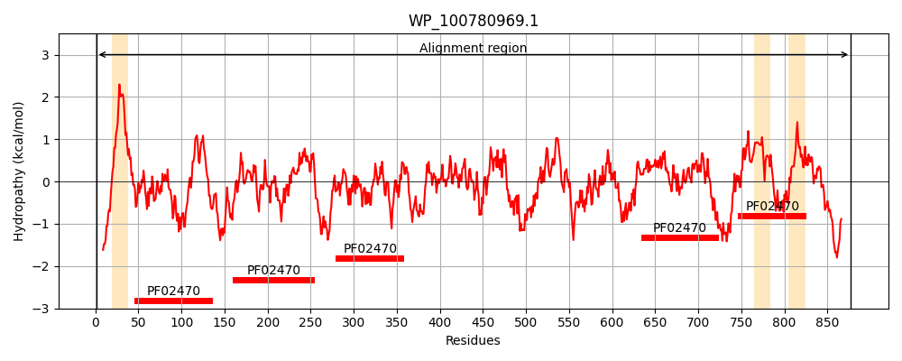
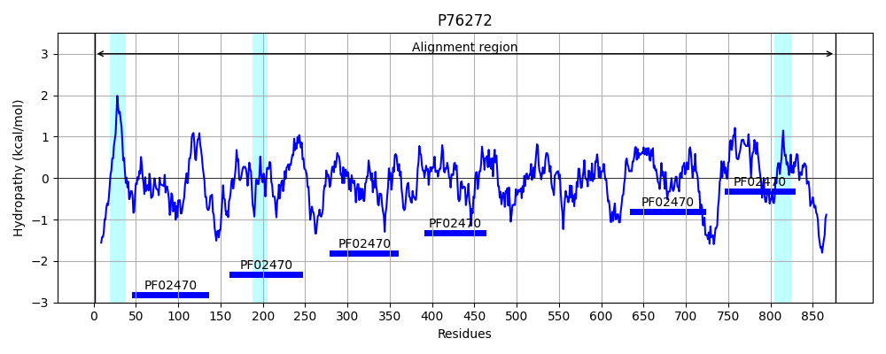
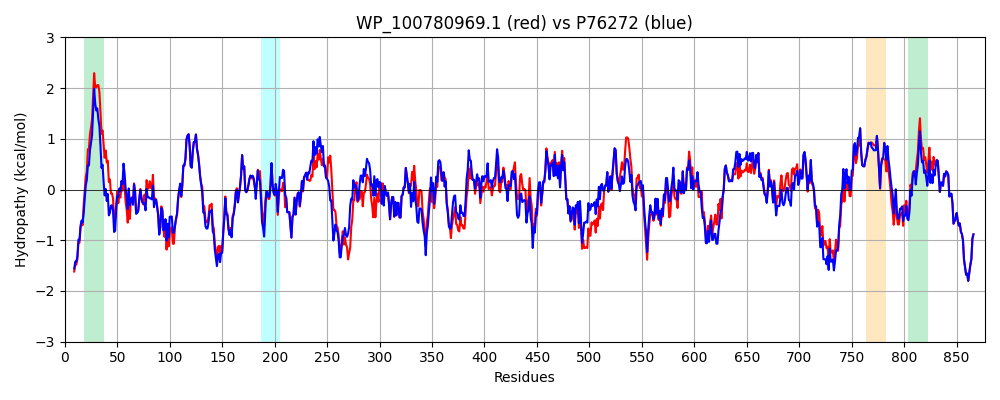

Hit Accession: P76272
Hit TCID: 9.A.69.1.2
Hit Description: gnl|BL_ORD_ID|11456 gnl|TC-DB|P76272|9.A.69.1.2 Uncharacterized protein YebT OS=Escherichia coli (strain K12) GN=yebT PE=3 SV=2
Mach Len: 877
e:0.000000
Query TMS Count : 3
Hit TMS Count: 3
TMS-Overlap Score: 2.000000
Predicted Substrates:CHEBI:8150;phospholipid
BLAST Alignment:
Score: 3760 , Bit scores: 1452 bits, E-value: 0.0e+00, Alignment length: 877, Percentage identity: 81
Query: 1 MSQESPASQTEARIKTKRRISPFWLLPVIALLIAAWLIWTSFDDRGSTITIDFQSANGIVPGRTPIRYQGVEVGTVQDISLSKDLSKIEVSASIKRDMKDALRKETQFWLVTPKASLAGVSGLDALVGGNYIGMMPGKGEPEDHFVALDTQPKYRINNGELMIHLQAPDLGSLNSGSLVYFRKIPVGRVYDFTLNANNQGVTIDVLIERRFTNLVKKGSRFWNVSGIKADVGLSGAKVQLENLSALVNGAIAFDSPADSQVAAQNDDYHLYEDLAHSQRGVLVTLDLPDGDGLKAGSTPLMYQGLEVGQLSKLNLNPGGKVTGEMTVDPSVVTLLREKTLIQMKKPKISLDNPSVSALLTGNTFELVPGEGEPRNHFSVMPADKALLEEPNVATVTLSAPESYGIDGGQPLVLHGVKVGQVLERKLTAKGVTFQVAIAPEYRDLIRGDSKFVVNSRLDVKVGLDGVQVLGASASEWVNGGIRVIPGEKGEMQSSYPLYANLEKAQENSLSEVPTTTLSLSAETLPDVQAGSVVLYRKFAVGEIIAVKPRKDAFDIDLHIKPEYRYLLSNNSVFWAEGGAKVKLDGNGLTVQASPLARAIKGAISFDNLNGSSANARLNNKRILYASETAARAVGGQITLHAFDAGKMAAGMPIRYLGIDIGQIQSLELITAKNEVQAKAVLYPEYVGTFARAGTRFSVITPQISAAGVEHLDTLFQSYINVEPGRGPARRDFEIQDTTISDSRYIDGLNIVVEAPEAGSLGIGTPVLFRGLEVGTVTGLSLGSMSDRVMVKLRISKRYQYLVRNNSVFWLASGYSLDFGLVGGVVKTGTFNQFIRGGIAFATPPGTPLAPKAQDGKHFLLQESEPKEWREWGTALPQ 877
MSQE+PAS TEA+IK KRRISPFWLLP IAL+IA+WLIW S+ DRG+T+TIDF SA+GIVPGRTP+RYQGVEVGTVQDISLS DL KIEV SIK DMKDALR+ETQFWLVTPKASLAGVSGLDALVGGNYIGMMPGKG+ +DHFVALDTQPKYR++NG+LMIHLQAPDLGSLNSGSLVYFRKIPVG+VYD+ +N N QGV IDVLIERRFT+LVKKGSRFWNVSG+ A+V +SGAKV+LE+L+ALVNGAIAFDSP +S+ A D + LYEDLAHSQRGV++ L+LP G GL A STPLMYQGLEVGQL+KL+LNPGGKVTGEMTVDPSVVTLLRE T I+++ PK+SL + ++SALLTG TFELVPG+GEPR F V+P +KALL EP+V T+TL+APESYGID GQPL+LHGV+VGQV++RKLT+KGVTF VAI P++R+L++GDSKFVVNSR+DVKVGLDGV+ LGASASEW+NGGIR++PG+KGEM++SYPLYANLEKA ENSLS++PTTT+SLSAETLPDVQAGSVVLYRKF VGE+I V+PR +AFDIDLHIKPEYR LL++NSVFWAEGGAKV+L+G+GLTVQASPL+RA+KGAISFDNL+G+SA+ R +KRILYASETAARAVGGQITLHAFDAGK+A GMPIRYLGIDIGQIQ+L+LITA+NEVQAKAVLYPEYV TFAR GTRFSV+TPQISAAGVEHLDT+ Q YINVEPGRG RRDFE+Q+ TI+DSRY+DGL+I+VEAPEAGSLGIGTPVLFRGLEVGTVTG++LG++SDRVM+ +RISKRYQ+LVRNNSVFWLASGYSLDFGL GGVVKTGTFNQFIRGGIAFATPPGTPLAPKAQ+GKHFLLQESEPKEWREWGTALP+
Sbjct: 1 MSQETPASTTEAQIKNKRRISPFWLLPFIALMIASWLIWDSYQDRGNTVTIDFMSADGIVPGRTPVRYQGVEVGTVQDISLSDDLRKIEVKVSIKSDMKDALREETQFWLVTPKASLAGVSGLDALVGGNYIGMMPGKGKEQDHFVALDTQPKYRLDNGDLMIHLQAPDLGSLNSGSLVYFRKIPVGKVYDYAINPNKQGVVIDVLIERRFTDLVKKGSRFWNVSGVDANVSISGAKVKLESLAALVNGAIAFDSPEESKPAEAEDTFGLYEDLAHSQRGVIIKLELPSGAGLTADSTPLMYQGLEVGQLTKLDLNPGGKVTGEMTVDPSVVTLLRENTRIELRNPKLSLSDANLSALLTGKTFELVPGDGEPRKEFVVVPGEKALLHEPDVLTLTLTAPESYGIDAGQPLILHGVQVGQVIDRKLTSKGVTFTVAIEPQHRELVKGDSKFVVNSRVDVKVGLDGVEFLGASASEWINGGIRILPGDKGEMKASYPLYANLEKALENSLSDLPTTTVSLSAETLPDVQAGSVVLYRKFEVGEVITVRPRANAFDIDLHIKPEYRNLLTSNSVFWAEGGAKVQLNGSGLTVQASPLSRALKGAISFDNLSGASASQRKGDKRILYASETAARAVGGQITLHAFDAGKLAVGMPIRYLGIDIGQIQTLDLITARNEVQAKAVLYPEYVQTFARGGTRFSVVTPQISAAGVEHLDTILQPYINVEPGRGNPRRDFELQEATITDSRYLDGLSIIVEAPEAGSLGIGTPVLFRGLEVGTVTGMTLGTLSDRVMIAMRISKRYQHLVRNNSVFWLASGYSLDFGLTGGVVKTGTFNQFIRGGIAFATPPGTPLAPKAQEGKHFLLQESEPKEWREWGTALPK 877 | Protein Hydropathy Plots: |
|---|
|  |  |
Pairwise Alignment-Hydropathy Plot:
|
|---|
|  |